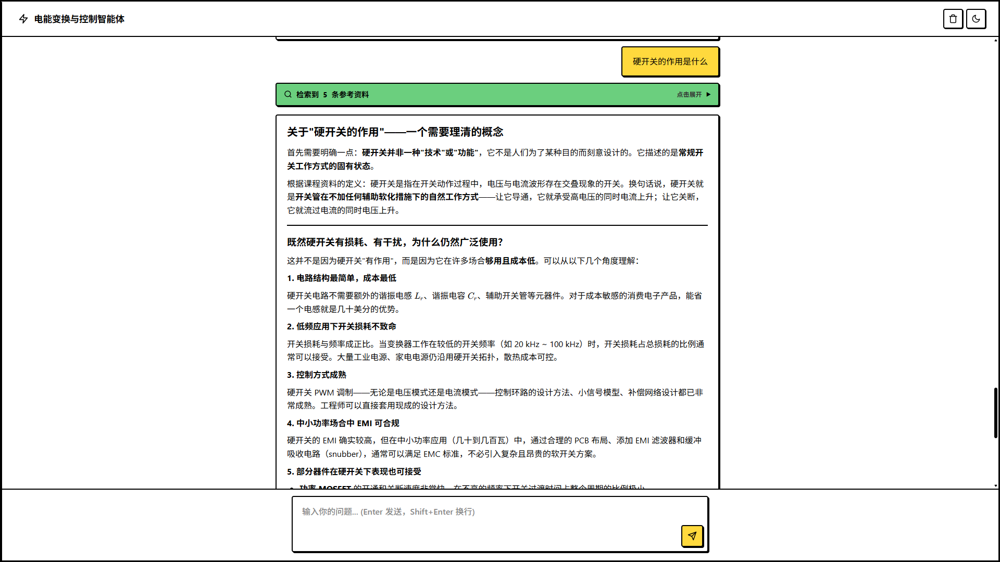

Agent Integration & Chat Interface
整个系统由四个节点组成，各司其职：
| 进程 | 技术栈 | 端口 | 职责 |
|---|---|---|---|
| 前端聊天界面 | HTML + CSS + Vanilla JS | 3001（静态文件） | 用户交互、消息渲染、SSE 消费 |
| Node.js 中间层 | Express + Claude Agent SDK | 3001（API 端点） | 路由、会话管理、RAG 调用编排、SDK 调用、SSE 推送 |
| RAG 检索服务 | Flask + LlamaIndex + ChromaDB | 5050 | 文档检索、上下文拼接 |
| Claude API | Anthropic Claude（云端） | — | 接收 system prompt（含 RAG 上下文）和用户消息，生成回答 |
每层各司其职、独立可替换。RAG 检索服务不感知前端，Node.js 中间层不感知向量库的具体实现，前端不感知模型调用细节，Claude API 可替换为其他模型而不影响其他层。
API Key 等敏感信息通过 .env 文件注入，不硬编码到源码中。项目提供 .env.example 模板：
# Anthropic API Key（必填） ANTHROPIC_API_KEY=sk-ant-xxxxxxxxxxxx # 模型选择（可选，默认 claude-sonnet-4-6） ANTHROPIC_MODEL=claude-sonnet-4-6 # 前端服务端口（可选，默认 3001） PORT=3001 # RAG 检索服务端口（可选，默认 5050） RAG_PORT=5050
使用时将 .env.example 复制为 .env 并填入真实的 API Key。服务端通过 dotenv 包自动加载。
config.js 将 .env 中的环境变量转化为具名导出，同时提供合理的默认值：
export const PORT = process.env.PORT || 3001;
export const ANTHROPIC_MODEL = process.env.ANTHROPIC_MODEL || 'claude-sonnet-4-6';
export const RAG_API_URL = `http://127.0.0.1:${process.env.RAG_PORT || 5050}`;
export const MAX_HISTORY_ROUNDS = 40; // 对话历史最大保留轮数
export const MAX_TOKENS = 8192; // Agent 单次回复最大 token
所有可调参数集中一处，修改后重启服务即可生效，无需在多个文件中查找替换。
系统提示词是 Agent 的"人格设定"，定义它的角色、知识边界、行为风格和输出格式。在 system-prompt.js 中，提示词被设计为一个接受 RAG 上下文参数的函数，每次请求时动态生成。
提示词按优先级分为六个层级：
| 层级 | 内容 | 作用 |
|---|---|---|
| 〇 | RAG 知识检索规则 | 最高优先级——要求模型以检索资料为准 |
| 一 | 知识覆盖范围（6 个模块） | 划定能力边界，超出范围诚实告知 |
| 二 | 五项核心能力 | 定义教学行为：引导式回答、苏格拉底式教学、电路分析、故障诊断、设计引导 |
| 三 | 教学策略 | 引导优先、分层讲解、知识关联、检验理解、深度控制 |
| 四 | 回复格式规范 | Markdown、LaTeX 公式、表格、禁止 emoji 和 ASCII 电路图 |
| 五 | 诚实与安全 | 不确定不编造、高压电安全警告 |
| 六 | 技能调用指引 | 按问题领域自动匹配对应的 Skill |
提示词末尾包含一段动态内容——实时检索到的参考资料。buildSystemPrompt(ragContext) 接受检索上下文参数，将其直接嵌入系统提示词：
## 当前检索到的权威参考资料（RAG 实时注入） [参考资料 1] 文件: power-device.md | 章节: /定义/功率器件概述/功率器件的分类/ [定义 > 功率器件概述 > 功率器件的分类] ### 功率器件的分类 功率器件通常工作于高电压、大电流条件下，按导通与关断的可控性可分为三类... **重要：以上参考资料是本问题的标准答案来源，回答时必须严格据此为准，不可编造。**
Claude Agent SDK（@anthropic-ai/claude-agent-sdk） 是 Anthropic 官方提供的 Node.js SDK，封装了与 Claude API 的通信细节——身份认证、请求构造、流式响应处理、工具调用管理等。使用 SDK 而非直接调用 HTTP API，可以省去大量基础设施代码，将注意力集中在业务逻辑上。
SDK 采用懒加载模式——首次对话请求时才动态导入，避免启动时的初始化延迟：
let agentSdk = null;
async function getAgentSdk() {
if (!agentSdk) {
agentSdk = await import('@anthropic-ai/claude-agent-sdk');
}
return agentSdk;
}
每次用户提问，服务端构造一个完整的 Agent 查询请求。sdk.query() 接受两个核心参数：
prompt：用户的对话上下文。服务端将最近 40 轮对话历史与当前提问拼接为 用户: ... \n 助手: ... \n 用户: ... 格式的纯文本。Agent SDK 将其作为用户消息发送给 Claude。options.systemPrompt：系统提示词。由 buildSystemPrompt(context) 动态生成，已包含本次检索到的 RAG 参考资料。options.permissionMode：设为 'auto'，允许 Agent 自主决定是否使用工具（Read、Write、Bash 等）。options.cwd：Agent 的工作目录，指向项目根目录。Agent 的 Skill 和工具调用在此上下文中执行。const stream = sdk.query({
prompt, // 对话历史 + 当前提问
options: {
cwd: PROJECT_ROOT, // Agent 工作目录
systemPrompt: buildSystemPrompt(context), // 系统提示词（含 RAG 上下文）
permissionMode: 'auto', // 允许 Agent 自主使用工具
maxTokens: MAX_TOKENS,
model: model || ANTHROPIC_MODEL,
},
});
前端采用零框架方案——纯 HTML + CSS + Vanilla JavaScript，不引入 React、Vue 等前端框架。对于一个聊天界面而言，交互模式相对固定，Vanilla JS 足以胜任，且省去了构建工具链的复杂度。

用户消息以纯文本展示，助手消息通过 Marked 库渲染为富文本。渲染管线集成了三种格式增强：
``` ）通过 highlight.js 按语言分类着色。$...$（行内）和 $$...$$（块级）通过 KaTeX 渲染为排版级数学公式，适配电力电子课程中频繁出现的电压增益、伏秒平衡等公式表达。点击 Header 中的标题文字，左侧滑出一个对话目录面板。它遍历当前会话中所有用户消息，截取前 60 个字符作为摘要，按序号排列。点击任意条目，目录收起，页面平滑滚动到对应的消息位置，并触发蓝色闪烁高亮动画。
聊天消息和 RAG 检索结果通过浏览器的 localStorage 持久化，刷新页面后对话历史不会丢失。
存储策略：
| 存储键 | 内容 | 更新时机 |
|---|---|---|
chat_messages |
全部消息的 [{role, content, id}] 数组 |
每条消息发送/接收完成后 |
chat_ragResults |
RAG 卡片数据 {assistMsgId: results[]} 映射 |
RAG 检索完成时缓存，消息结束时写入 |
chat_sessionId |
当前会话 ID | 创建新会话时 |
刷新页面时，loadFromStorage() 按顺序恢复：先重建消息气泡，再为每条有 RAG 数据的助手消息重建参考资料卡片。清空历史时，三项存储一并移除。
将以上所有组件串联起来，一条用户消息的完整处理流程如下：